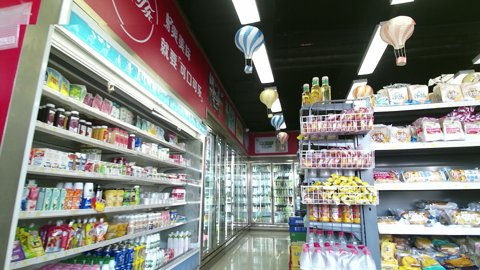
Board, Bottle, Fridge, Lamp, Shelf
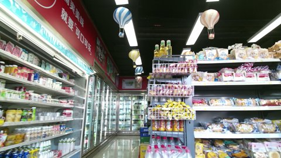
Fridge, Lamp, Products, Shelf
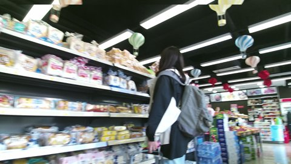
Board, Fridge, Fruits, Lamp, People, Products, Shelf
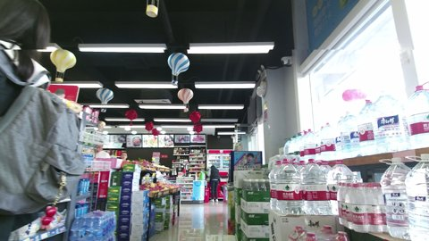
Board, Checkout, Door, Freezer, Fridge, Fruits, Lamp, People, Products, Shelf, Sign, Window
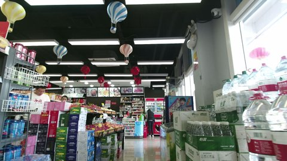
Board, Checkout, Door, Freezer, Fridge, Fruits, Lamp, People, Products, Shelf, Window
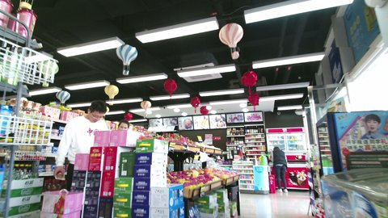
Board, Checkout, Freezer, Fridge, Fruits, Lamp, People, Products, Shelf
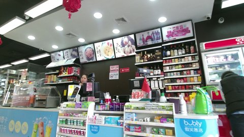
Board, Checkout, Freezer, Fridge, Lamp, People, Products, Sign
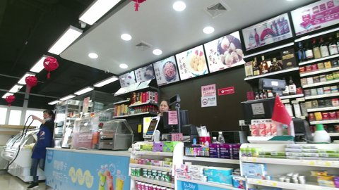
Board, Fridge, Lamp, People, Products, Shelf, Window
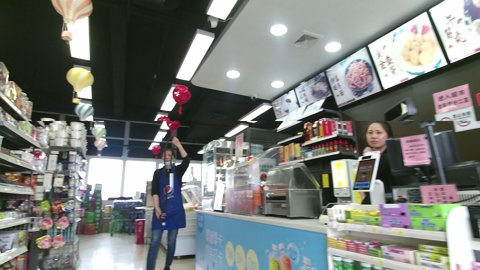
Board, Checkout, Computer, FireExtinguisher, Lamp, People, Products, Shelf, Sign, Window
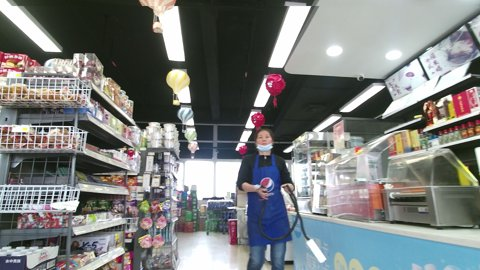
Board, Checkout, FireExtinguisher, Lamp, People, Products, Shelf, Window
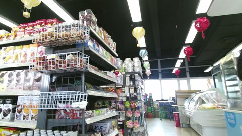
Checkout, Lamp, Products, Shelf, Window
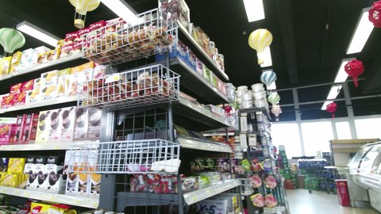
FireExtinguisher, Fridge, Lamp, Products, Shelf, Window
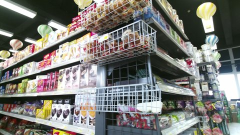
Lamp, Products, Shelf, Window
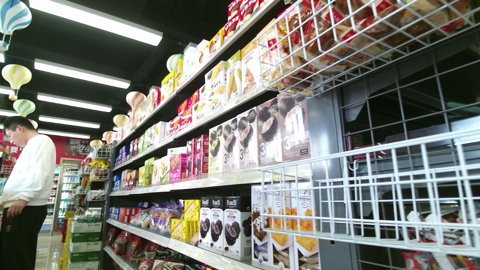
Door, Lamp, People, Products, Shelf
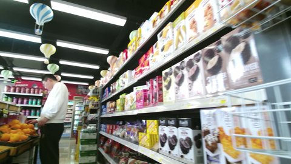
Board, Bottle, Fridge, Lamp, People, Products, Shelf, Stall
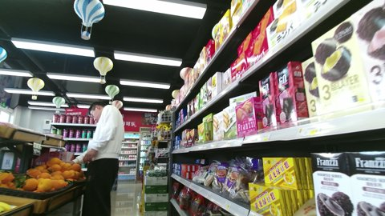
Board, Bottle, Fridge, Lamp, People, Products, Shelf, Stall, Window
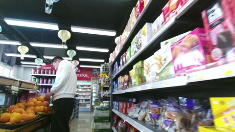
Fridge, Fruits, Lamp, People, Products, Shelf, Window
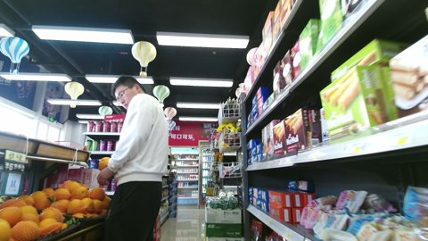
Board, Bottle, Fridge, Lamp, People, Products, Shelf, Stall, Window
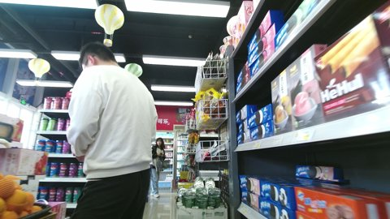
Basket, Board, Bottle, Fridge, Lamp, People, Products, Shelf, Stall, Window
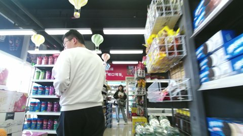
Basket, Board, Bottle, Fridge, Lamp, People, Products, Shelf, Window
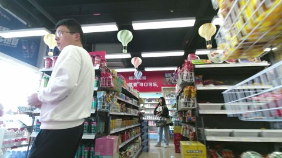
Basket, Board, Bottle, Fridge, Lamp, People, Products, Shelf, Window
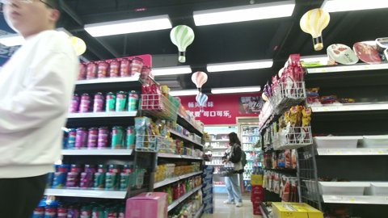
Basket, Board, FireExtinguisher, Fridge, Lamp, People, Products, Shelf
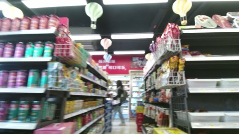
Board, Fridge, Lamp, People, Products, Shelf
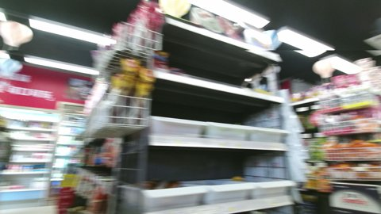
Door, Lamp, Products, Shelf
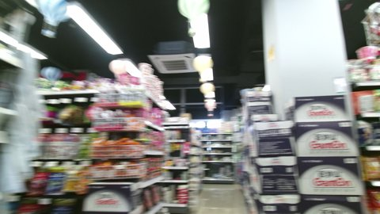
Lamp, Products, Shelf, Vent, Window
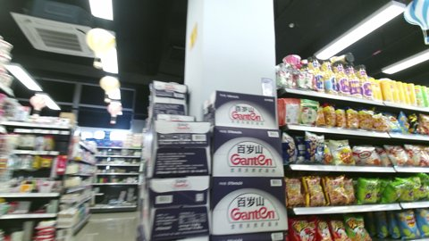
Lamp, Products, Shelf, Vent, Window
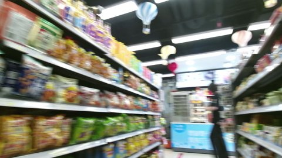
Board, Lamp, People, Products, Shelf, Table
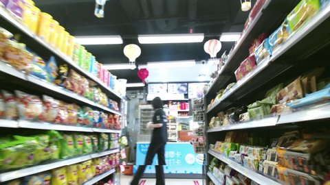
Board, Lamp, People, Products, Shelf, Table
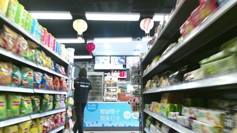
Board, Lamp, People, Products, Shelf, Table
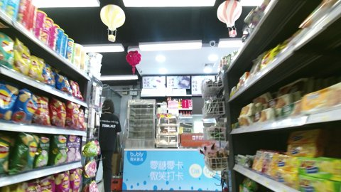
Board, Checkout, Lamp, People, Products, Shelf
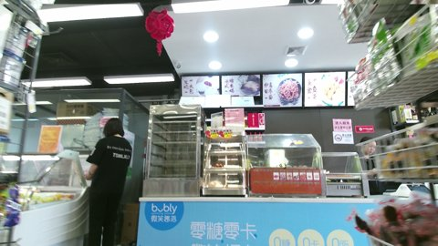
Board, Fridge, Lamp, People, Products, Shelf, Sign, Table, Vent
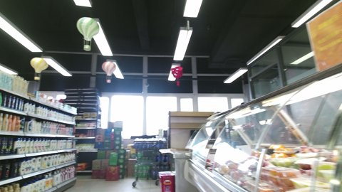
FireExtinguisher, Fridge, Lamp, Products, Shelf, Shopping Cart, Sign, Table, Window
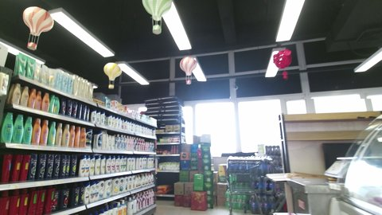
Bottle, Fridge, Lamp, Products, Shelf, Shopping Cart, Table, Window
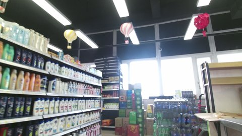
Lamp, Products, Shelf, Shopping Cart, Table, Window
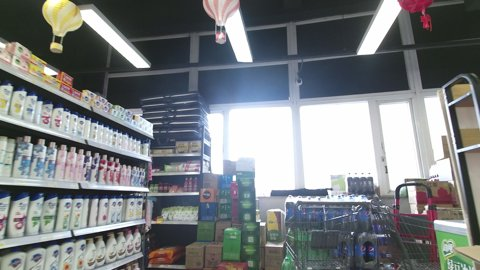
Freezer, Lamp, Products, Shelf, Shopping Cart, Window
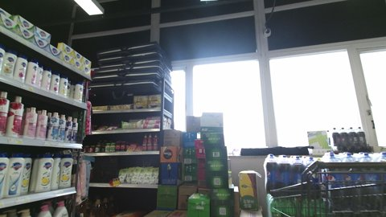
Bottle, Lamp, Products, Shelf, Shopping Cart, Window
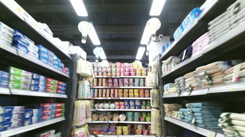
Lamp, Products, Shelf, Shopping Cart
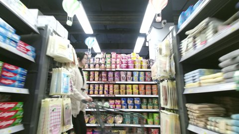
Lamp, People, Products, Shelf, Shopping Cart
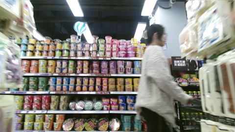
Lamp, People, Products, Shelf, Shopping Cart
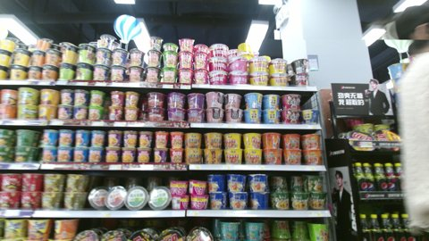
Bottle, Lamp, People, Products, Shelf
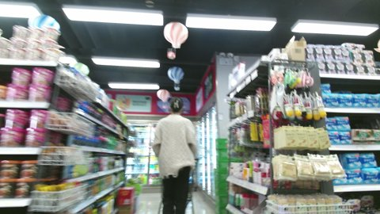
Fridge, Lamp, People, Products, Shelf, Shopping Cart
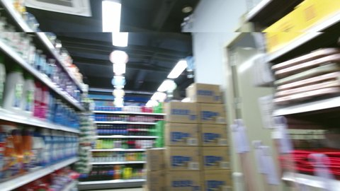
Door, Lamp, Products, Shelf, Vent
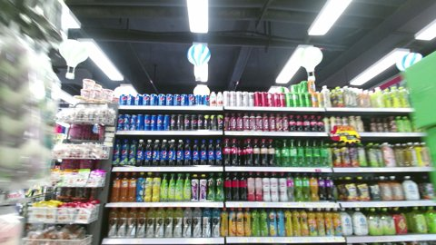
Basket, Lamp, Products, Shelf
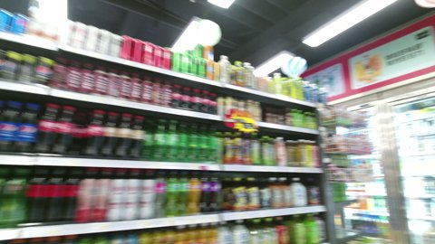
Basket, Board, Lamp, Products, Shelf
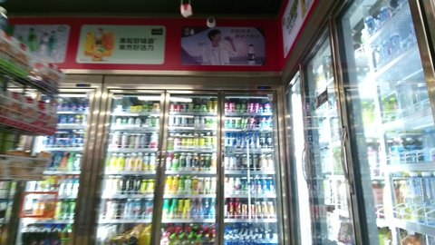
Basket, Board, Fridge, Products
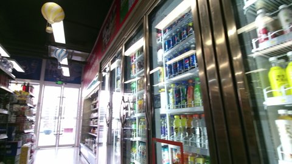
Board, Door, Fridge, Lamp, Products, Shelf
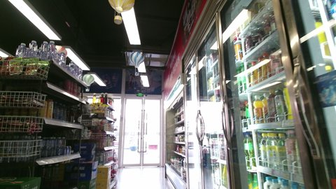
Basket, Board, Door, Fridge, Lamp, Products, Shelf
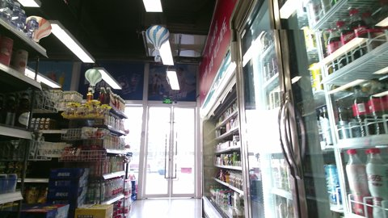
Board, Door, Fridge, Lamp, Products, Shelf
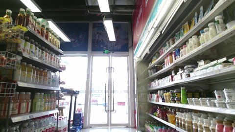
Basket, Board, Door, Lamp, Products, Shelf, Table
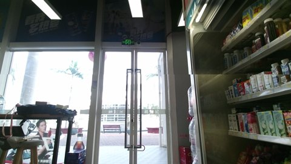
Board, Door, Lamp, Products, Stool, Table